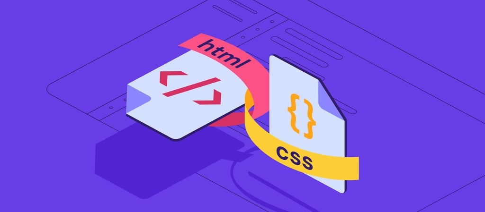

Hakkımda
Becerilerimi sürekli geliştirme ve mesleki olarak kendimi ilerletme konusunda motivasyonum oldukça yüksektir aynı zamanda planlı programlı çalışmaktan oldukça keyif alırım .
Sosyal Medyada Ben
Öğrenme Serüvenim
Üretken Akademi Yazılımcı Fabrikası

Merhaba, Web tasarlama ve geliştirme alanını öğrenmeye başladığımda, HTML, CSS ve JavaScript gibi temel teknolojileri öğrenmeye karar verdim.
İlk olarak HTML ile başladım ve web sayfasının içeriğini nasıl tanımlayabileceğimi öğrendim. Etiketleri kullanarak metin, resimler ve bağlantılar ekledim ve web sayfamın temel yapısını oluşturdum.
Sonra CSS ile devam ettim ve web sayfamın görünümünü nasıl değiştirebileceğimi öğrendim. Renkler, fontlar, arka planlar ve diğer görsel özellikleri kullanarak web sayfamın estetiğini iyileştirdim.
Son olarak JavaScript ile web sayfamın dinamik kısmını oluşturmayı öğreniyorum. JavaScript ile web sayfamın içeriğini değiştirebildim, kullanıcının tepkilerini alabildim ve gerçek zamanlı olarak web sayfamı güncelleyebildim.
Vizyonum

Bu üç teknoloji birlikte kullanıldığında, kişisel web sayfamda güçlü ve özelleştirilebilir bir içerik oluşturabildim. Öğrenme serüvenim boyunca, bu teknolojileri kullanarak çeşitli projeler yapıp kendimi olabildiğince geliştirmek istiyorum. Bu teknolojileri öğrenmenin keyifli ve bol meyveli olduğunu düşünüyorum. Web tasarım ve geliştirme alanında ilerlemek için bu temel teknolojileri iyi bilmenin önemli olduğuna inanıyorum.